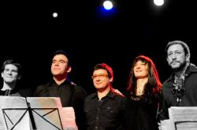

taktlos.12 ¶¶ Giulia Valle Group ¶¶ ES ¶¶¶
| 11. Mai 2012 | ||
| 20:00 |
¶+ + Rote Fabrik _Zürich++ Aktionshalle+ ¶+ + Abendeintritt_ Fr. 45.–/35.– Erm. Reservation/ Vorverkauf: Starticket+ ¶¶¶+ +
¶+ _Giulia Valle, bass/compositions+ Martí Serra, tenor-/sopranosax+ Gorka Benítez, tenorsax/flute+ Marco Mezquida, piano/fender rhodes/keyboards/accordion+ Oriol Roca, drums/percussion+ ¶¶¶+ +
¶
¶¶¶
¶
¶¶¶
¶
¶+ + Sind basspielende Bandleader, die auch komponieren, mehr »